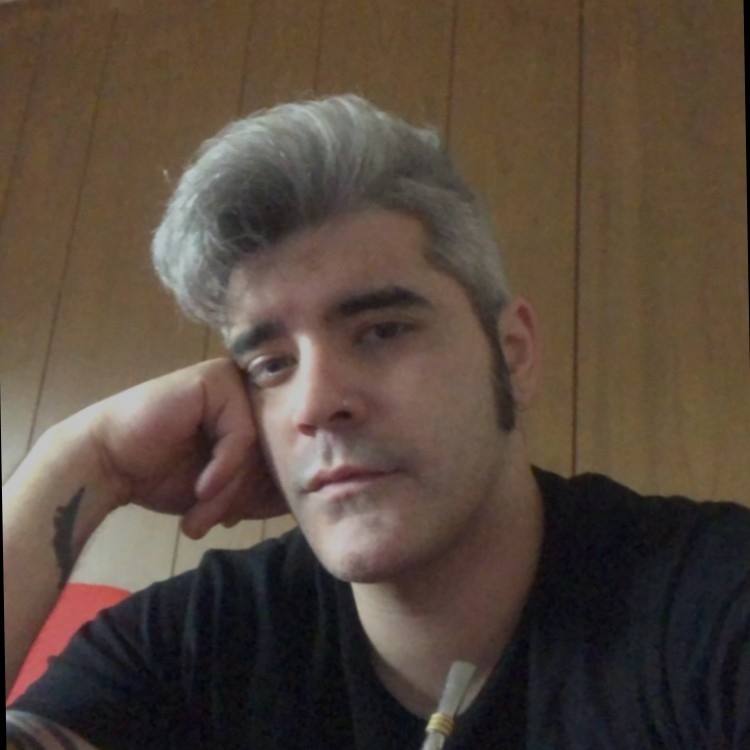

Manuel Fernandez
On It!
Argentina
Buenos Aires
Experiencia
Avaya
11 años 4 meses
Digital IT Transformation Team
mayo de 2021 - Present (1 año 2 meses)
Digital Improvement Analyst
AI NLU Engineer
Tech Solutions Deployment
Automations Development
Web Dev-Content Management
JavaScript Developer
CSS Designer
HTML Architect
Team Leader
junio de 2017 - septiembre de 2021 (4 años 4 meses)
Manejo de agentes y sus tareas asignadas a resultados
Manejo de Proyectos
Control Operacional, Responsable de piso
Administracion y control operativo
Manejo de recursos y coordinacion inter-proyecto
Soporte operativo
Meeting host
Manejo de proyectos e implementaciones de creación & ejecución de procesos.
Auditor de procesos y generacion de contenido.
Manejo de presupuesto
Administration and operation control of a team of 30 IT & Post Sales Techs
Floor responsible and on duty coordinator
Operational Support, Backup Supervisor
Project coordinator & management of new and planned business instances
Resource management and inter-project coordination for new technologies
and processes
Project management and process implementation for technologies and
processes
Process creation, deployment, analysis
People management, control, guidance and support for the entire team
Metrics performance analysis and follow-up for my direct reports
Meeting Host for weekly resource meetings and Management meetings
Trainer for new processes and deployments
Budget management for events
Workforce Analyst
enero de 2016 - septiembre de 2021 (5 años 9 meses)
Administracion y control operativo.
Manejo de recursos y coordinacion inter-proyecto.
Soporte operativo y meeting host.
Manejo de proyectos e implementaciones de procesos
Creación & ejecución de procesos.
Auditor de procesos y generacion de contenido.
Administration and operation control for day to day business
Resource management and inter-project coordination for new deployments/
changes
Operational Support, Backup Team Lead for operational needs
Inter- Project coordinator for 3-2-1 strategies and implementations
Project management and process implementation for new strategies
Process creation, deployment, analysis for new strategies and changes.